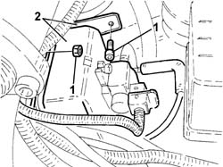
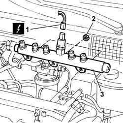
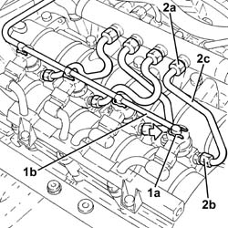
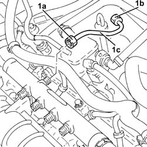
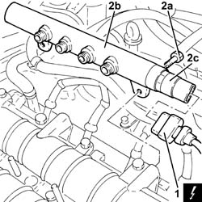
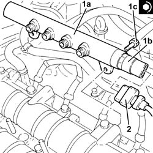
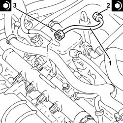
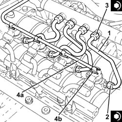

1060F30 fuel delivery manifold - r r
- Path
- Procedures > 10 ENGINE > 1060 DIESEL FUEL INJECTION > 1060F injectors and lines > 1060F30 fuel delivery manifold - r r
- Kind
- repair procedure (removal / refitting; the operation number is the code)
- Applies to
- engines: 1.9 JTD 8V, 1.9 JTD 16V; all production periods
- Interactive page
- https://sloeber94.github.io/elrnDB-a147/en/#/3025034
Applies to: engines: 1.9 JTD 8V; all production periods
 Removing
Removing
 Refitting
Refitting1016A10 sound-proofing cover - r + r
1060F20 pressure pump/manifold pipe - r r
1060F36 lines to injectors - r r
Release the wiring from the clips that secure it to the fuel manifold pipe.
1. Unscrew the nuts and bolts retaining the vacuum tank mount to the pressure pump mount and the single fuel manifold.
2. Remove the vacuum tank with mounting bracket from the seat.

Applies to: engines: 1.9 JTD 8V; all production periods
1. Disconnect the electrical connection from the fuel pressure sensor.
 | Name | Connector |
|---|---|---|
1 | Fuel pressure sensor |
2. Undo the bolts securing the fuel manifold to the intake manifold.
3. Remove the single fuel manifold.

Applies to: engines: 1.9 JTD 8V; all production periods
Refitting
RemovingFit the single fuel manifold in its seat on the intake manifold.
Tighten the nuts securing the fuel manifold to torque.
 | Fastening | Component | Ø | Value (daNm) |
|---|---|---|---|---|
- | Nut | INJECTOR FUEL MANIFOLD (DIESEL) | M8 | 2.5 |
Connect the electrical connection to the fuel pressure senor.
| Name | Connector |
|---|---|---|
- | Fuel pressure sensor |
Secure the vacuum tank mount to the pressure pump mount and crankcase.
Secure the injection wiring to the manifold pipe using new collars.
1060F36 lines to injectors - r r
Applies to: engines: 1.9 JTD 16V; all production periods
Removing
RefittingProceed with removal 1016A10 sound-proofing cover - r + r .
Ensure that the ignition key is in the OFF position, then disconnect the negative battery terminal (-).
| Name | Connector |
|---|---|---|
- | Battery |
1. Push clips (1a) by hand and disconnect the pipe from the injectors to the fuel recovery manifold (1b), injectors side and move it aside.
2. Undo the connectors (2a), (2b) and remove the pipe from the fuel manifold to the injectors (2c).

Applies to: engines: 1.9 JTD 16V; all production periods
1. Undo the connectors (1a), (1b) and remove the pipe from the pressure pump to the fuel manifold (1c).

Applies to: engines: 1.9 JTD 16V; all production periods
1. Disconnect the electrical connection from the fuel pressure sensor.
| Name | Connector |
|---|---|---|
1 | Fuel pressure sensor |
2. Undo the bolts (2a) and remove the single fuel manifold pipe (2b) complete with fuel pressure sensor (2c).

Applies to: engines: 1.9 JTD 16V; all production periods
Refitting
Removing1. Place the single fuel manifold pipe (1a), complete with fuel pressure sensor (1b), back in its housing and secure it tightening the bolts (1c) to the recommended torque.
| Fastening | Component | Ø | Value (daNm) |
|---|---|---|---|---|
1c | Bolt | INJECTOR FUEL MANIFOLD (DIESEL) | M8 | (Camshaft housing side 23 28 |
2. Connect the electrical connection to the fuel pressure sensor.

Applies to: engines: 1.9 JTD 16V; all production periods
1. Place the pipe from the pressure pump to the single fuel manifold back in its housing and fix it using the connectors without tightening them.
2. Tighten the connector for the pipe from the pressure pump to the single fuel manifold, pump side, to the recommended torque using a suitable spanner.
| Fastening | Component | Ø | Value (daNm) |
|---|---|---|---|---|
2 | Connector | PRESSURE PUMP LINE TO FUEL MANIFOLD | M14 | (Pressure pump side 22 24 |
3. Tighten the connector for the pipe from the pressure pump to the single fuel manifold, fuel manifold side, to the recommended torque using a suitable spanner.
| Fastening | Component | Ø | Value (daNm) |
|---|---|---|---|---|
3 | Connector | PRESSURE PUMP LINE TO FUEL MANIFOLD | M14 | (Fuel manifold side 22 24 |

Applies to: engines: 1.9 JTD 16V; all production periods
1. Fit the new pipes from the fuel manifold to the injectors and secure them using the connectors without tightening them.
2. Tighten the connectors for the pipes from the fuel manifold to the injectors, injector side, to the recommended torque using a suitable spanner.
| Fastening | Component | Ø | Value (daNm) |
|---|---|---|---|---|
2 | Connector | FUEL MANIFOLD LINE TO INJECTORS | M12 | (Injector side) 2.2 ÷ 2.4 |
3. Tighten the connectors for the pipes between the fuel manifold and the injectors, fuel manifold side, to the recommended torque using a suitable spanner.
| Fastening | Component | Ø | Value (daNm) |
|---|---|---|---|---|
3 | Connector | FUEL MANIFOLD LINE TO INJECTORS | M12 | Fuel manifold side 22 24 |
4. Connect the pipe from the injectors to the fuel recovery manifold (4a) to the injectors pushing it until the clips (4b) can be heard clicking into place.

Applies to: engines: 1.9 JTD 16V; all production periods
Connect the negative (-) battery terminal
Proceed with refitting 1016A10 sound-proofing cover - r + r .
Topics linked from this page (5)
- 1016A10 sound-proofing cover - r + r
- 1060F20 pressure pump/manifold pipe - r r
- 1060F36 lines to injectors - r r
- A1B Battery ( Connectors )
- K83 Fuel pressure sensor